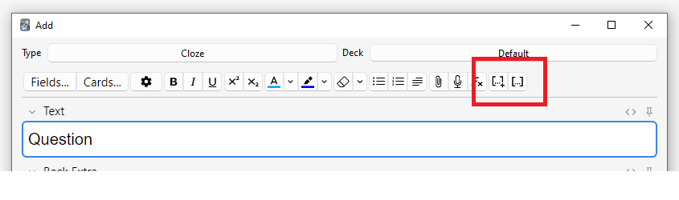

介紹 Introduction
行動端 Mobile Clients
本使用手冊適用於電腦端 Anki。要取得行動端 Anki 使用手冊，請前往：
- 《AnkiDroid 使用手冊》 (Android)
- 《AnkiMobile 使用手冊》 (iPhone/iPad)
快速上手 Quickstart
趕時間嗎？請前往〈新手入門〉。
取得協助 Getting Help
需要幫助？請參閱〈取得協助〉。
翻譯 Translations
志願者將此手冊翻譯成了不同語言。翻譯版本可能過時，以原英文手冊為準。
- Bahasa Indonesia
- Deutsch
- Español
- Français
- Italiano
- Polski
- Português Brasileiro
- русский язык
- Українська
- العربية
- فارسى
- 日本語
- 简体中文
要參與翻譯手冊，請見翻譯文檔。
歷史文檔 Legacy Documentation
如果你正在使用較舊版本的 Anki，請在網站時光機上檢視使用手冊歷史版本。
要了解舊版排程器，請參閱此常見問答集。
新手入門 Getting Started（英文）
安裝與升級 Installing & Upgrading
請前往 Anki 官方網站以取得 Anki、AnkiMobile、AnkiDroid 或 AnkiWeb。
要取得各電腦作業系統上的安裝及升級指引，請參閱：
影片教學 Videos
以下影片可能使用舊版 Anki 演示，但概念大同小異。
-
共享牌組和複習簡介（英文）
-
同步（英文）
-
切換卡片順序（英文）
-
設計卡片（英文）
-
輸入答案（英文）
-
阿姨我決定要繼續努力了！使用卡片軟體 Anki 學會任何東西 + 輕鬆應付考試！ - PAPAYA 電腦教室
主要概念 Key Concepts
卡片 Cards
類似紙製字卡，一張卡片包括問題面和答案面，但 Anki 中的卡片可以在答案面上同時顯示問題面內容。假設你在學習基礎化學，有一張卡片的問題面為：
Q: 氧氣的化學符號是什麼？
思考得出答案為 O 後，按下「顯示回答」按鈕，此時將顯示：
Q: 氧氣的化學符號是什麼？
A: O
確定回答正確之後，你需要選擇記憶保持的水平，然後 Anki 會為你選擇下一次複習這張卡片的時機。如果卡片將在 3 天後下一次出現，在 Anki 中則稱這張卡片的「間隔」為 3 天。
卡片狀態
-
新卡片：下載或建立後從未學習過的卡片。
-
學習中：近期初次學習，但還未學完的卡片。
-
複習卡：學完過後，需要根據卡片延遲間隔來定期複習的卡片。複習卡有兩種類型：
- 未熟練：學完後間隔小於 21 天的卡片。
- 熟練：間隔大於 21 天的卡片。
-
重新學習：遺忘並需要重新學習的複習卡。
牌組 Decks
「牌組」由許多卡片組成。你可以把卡片放進不同的牌組中，方便分類學習。你可以單獨調整牌組設定，例如每天要學習的新卡片數量、卡片下次出現的時間等。
你可以分層整理牌組，將牌組放進另一個牌組中。Anki 使用兩個半形冒號「::」來表示層級。「日文::漢字」表示「漢字」牌組，包含於「日文」牌組中。選取「漢字」牌組只會顯示漢字卡片；選取「日文」牌組會顯示所有日文卡片，包括漢字卡片。
要分層置放牌組，你可以在牌組層級的名字之間輸入「::」，或者在牌組列表中拖放牌組。在其他牌組下層的牌組稱作「子牌組」，上層的牌組則稱為「父牌組」。
Anki 一開始會為你建立一個「預設」牌組，任何不包含於其他牌組的卡片都將被放入預設牌組中。若預設牌組中沒有卡片，且同時存在其他牌組，則預設牌組會被隱藏。你也可以對它重新命名，當作普通的牌組使用。
在牌組清單中，牌組依字母順序顯示。因此，當你的牌組名稱包含數字時，順序可能不盡人意。例如，「牌組 10」會排在「牌組 9」前，因為 1 會排在 9 前面。若要使「牌組 9」排在「牌組 10」之前，你可以將其重新命名為「牌組 09」。
牌組最好用來將卡片歸入較大類別，不建議細分成「食物單字」、「第一課」這樣的牌組。請參閱〈恰當使用牌組〉來進一步了解。
關於牌組順序對卡片顯示順序的影響，請參閱〈顯示順序〉章節。
筆記與欄位 Notes & Fields
做字卡時，一個知識點經常需要製作多張卡片。例如，在學習日文時，你學到「こんにちは」意為「你好」後，想要建立一張卡片顯示「こんにちは」，提問它的意思「你好」，然後再建立一張卡片顯示「你好」，提問它的日文「こんにちは」。兩張卡片分別考驗你的認知和輸出能力。
使用紙製閃卡時，你只能分別做兩張卡片。有些閃卡程式可以調換正背面，雖然能做到節省時間，但這些程式通常有兩大缺點：
-
這些程式無法分開記錄你的認知和輸出能力的表現，卡片無法在最恰當的時機出現。這會導致記憶保持不佳，或是多費時但對記憶無益。
-
只有當兩面內容完全一致時才能直接調換正背面。因此你沒有辦法為每張卡片的背面各自加入更多資訊。
這些問題在 Anki 得以解決——你可以把卡片內容細分為多則資訊。在每張卡片中指定顯示哪些資訊後，Anki 會自動為你建立卡片。將來做出的任何修改都會自動更新到卡片中。
假設我們要學習日文字彙，想在每張卡片的背面加入課本頁碼：
問：こんにちは
答：你好
第 12 頁
和這樣：
問：你好
答：こんにちは
第 12 頁
兩張卡片中都含有相同的三則資訊：日文單字、中文意思和頁碼：
日文：こんにちは
中文：你好
頁碼：12
這樣的相關資訊集中起來，則組成一則「筆記」。一個「欄位」儲存一則資訊。所以上述筆記範例中有三個欄位：「日文」、「中文」和「頁碼」。
要加入及編輯欄位，請在新增或編輯筆記時按一下「欄位…」按鈕。進一步了解自訂欄位。
卡片類型 Card Types
要根據筆記內容來建立卡片，Anki 需要一張藍圖——卡片正背面應顯示的欄位。這張藍圖叫做「卡片類型」。每個筆記類型都可以包含一或多個卡片類型；新增筆記時，每個卡片類型都會產生一張卡片。
每個卡片類型都有問題面和答案面兩個「模板」。在上文的範例中，認知卡片應為：
問：こんにちは
答：你好
第 12 頁
要建立這樣的卡片，答案面模板可以設定成：
問：{{日文}}
答：{{中文}}<br>
第 {{頁碼}} 頁
在卡片模板中，欄位名稱應以雙花括號 {{}} 括住，例如 {{日文}}、{{中文}}。Anki 會以欄位實際內容來取代這些代號。這一過程叫「欄位取代」。不在雙花括號中的文字會顯示在每張卡片上。例如，在新增筆記時，無須在每則筆記的頁碼欄位中都寫入「第 ... 頁」，模板上的「第」和「頁」會自動顯示在每張卡片上。<br> 標籤是一條用於換行的特殊代碼。進一步了解模板。
輸出卡片的模板也類似：
問：{{中文}}
答：{{日文}}<br>
第 {{Page}} 頁
建立卡片類型後，每次新增筆記時，各卡片類型將分別產生一張卡片。卡片類型可助你保持卡片格式一致、輕鬆修改卡片。卡片類型還能讓 Anki 知道有哪些卡片是相關的，不讓關聯的卡片同時出現。發現內容有誤時，只要修改一次就能更新到所有關聯的卡片上。
要新增及編輯卡片類型，請在新增或編輯筆記時按一下「卡片…」按鈕。進一步了解卡片類型。
筆記類型 Note Types
你可以在 Anki 中建立不同的筆記類型，用於不同的學習內容。每個筆記類型都有自己的欄位和卡片類型。建議為你學習的每個課題都單獨建立一個筆記類型。在上面日文單字的範例中，我們可以建立一個名為「日文」的筆記類型。若要記憶各國首都，可以再建立一個筆記類型，加入「國家」、「首都」等欄位。
Anki 內建了一些基本的筆記類型。這些筆記類型適合新手入門使用，但隨著你逐漸熟悉 Anki，你應該自己建立一些筆記類型，專門用於你正在學習的內容。基本筆記類型有以下這些：
-
基本型
有「正面」、「背面」兩個欄位，建立一張卡片。「正面」欄位的內容會顯示在卡片正面，「背面」欄位的內容會顯示在卡片背面。 -
基本型（含反向卡片）
在基本型的基礎上增加了一張反向卡片，建立兩張卡片：正面→背面，背面→正面。 -
基本型（選擇性反向卡片）
在基本型的基礎上增加了「加入反向卡片」欄位，只要在此欄位中輸入任意文字，就會多建立一張反向卡片「背面→正面」卡片。進一步了解卡片模板。 -
基本型（輸入答案）
在基本型的基礎上，在卡片正面增加了一個文字框，輸入答案後，當你將卡片翻到背面，Anki 會對比輸入的答案與正確答案。進一步了解檢查答案。 -
克漏字
使用這個筆記類型，你可以選取文字，然後將其轉換為一個填空題空格（例如「人類在 […] 年首次登陸月球」→「人類在 1969 年首次登陸月球」）。進一步了解克漏字空格。 -
影像遮擋
可看作是用在影像上的「克漏字」類型，適合需要使用大量圖片的學習內容，例如解剖學、地理等學科。進一步了解影像遮擋。
要新增自己的筆記類型及修改現有筆記類型，請在 Anki 主視窗選擇「工具」>「管理筆記類型」。
筆記和筆記類型通用於整個集合，不受限於單個牌組。你可以在同一個牌組中使用多種不同的筆記類型，也可以把同一則筆記產生的好幾張卡片分別放入不同的牌組中。在「新增」視窗中，你可以自由選取筆記類型和牌組。另外，筆記在建立之後仍可更改其筆記類型。
集合 Collection
「集合」指儲存在 Anki 中的所有資料——包括你的卡片、筆記、牌組、筆記類型、牌組選項等。
共享牌組 Shared Decks
入門使用 Anki 最簡單的方式就是直接下載別人分享的牌組：
-
按一下牌組清單下方的「取得共享牌組」按鈕。
-
找到心儀的牌組後，按一下「Download」按鈕來下載牌組檔。
-
下載完成後，按兩下下載好的牌組檔來匯入 Anki，你也可以在 Anki 中選擇「檔案」→「匯入…」。
注意：目前無法直接將共享牌組加入 AnkiWeb 帳號中。你需要先把牌組匯入電腦程式、AnkiMobile 或 AnkiDroid 之後再將牌組同步到 AnkiWeb 上。
學習比較複雜的學科時，自己建立牌組是最高效的學習方式。單靠死記硬背無法讓你真正理解語言、科學等學科，你需要看到解釋、知道語境，才能高效學習。而且，因為你需要挑選出關鍵點再輸入文字，你會得到更深入的理解。
如果你在學習一門語言，你可能會想要下載像是「必背 7000 字」這樣一大堆帶有翻譯的單字卡，但這樣無異於單靠背誦公式來學物理。要學好語言，你需要教材、老師或者多接觸真實對話。
不要學習未理解的內容。
Do not learn if you do not understand.
--SuperMemo
大多數共享牌組的建立者都是在 Anki 之外——透過教材、課堂、電視劇等途徑學習後，再把學到的內容加入 Anki。由於已經對材料有了一定了解，他們可能不會專門為卡片加入解釋或補充相關資訊。如果你下載了這些牌組，直接學習這些卡片可能會有一定的難度。
但共享牌組也並非一無是處——如果你正在使用教材《ABC》，下載別人共享的《ABC》牌組可以節省不少時間。而在學習簡單的內容時，像是首都名稱或國旗這種簡單的配對題，單靠共享牌組也足以應對。但學習比較複雜的內容時，你應該透過其他途徑學習過後，再在 Anki 中使用共享牌組，而不是直接在 Anki 中學習這些內容。
Getting help
Asking good questions
With the exception of AnkiMobile, Anki and its support are provided free of charge, by people who generously volunteer their time. Please bear this in mind when posting - if you are rude and demanding, or have made no effort to solve the problem on your own, people are less likely to want to help you.
Please start by trying to resolve the issue on your own:
- Read the getting started section of the manual, and check out the intro videos.
- If you've encountered a bug, please follow these steps.
- Use the search button on this page to search frequently asked questions.
- Use the search button in the manual.
- Use the search button on the forums.
- Google the issue.
If you have tried the above and are still stuck, it's time to ask for help. When writing a post, please explain the problem you are having clearly, and in detail.
Please avoid vague questions like:
"My Anki doesn't work, what should I do?"
Instead, please provide as much detail as you can. For example:
"When I double-click on the Anki icon, an error message pops up. I tried searching for the error on Google, but couldn't find anything useful. I have copied and pasted the error message to the bottom of my post. I followed the steps on the "When problems occur" page, but the error message does not go away. What should I do?"
This is a much better question. It tells us:
- What you have tried.
- What steps you are taking when the problem happens.
- What problems/errors you are getting when things go wrong.
Knowing these things makes it much easier to answer your question.
The user forums use a different login to AnkiWeb, so please create an account there if it's your first time.
Anki Desktop (the computer version) and AnkiWeb
After reading the above section, please post on the user forums for assistance.
The user forums use a different login to AnkiWeb, so please create an account there if it's your first time.
AnkiDroid (Android devices)
Please see AnkiDroid's support page.
AnkiMobile (iPhone/iPad)
Please see AnkiMobile's support page.
Private questions
For security reports and business enquiries, you can post a private ticket here. If you have a question about Anki, AnkiWeb or AnkiDroid, please use the user forums instead.
學習 Studying（英文）
- 牌組 Decks
- 學習概覽 Study Overview
- 問題面 Questions
- 回答按鈕 Answer Buttons
- 模糊乘數 Fuzz Factor
- 「編輯」與「其他」 Editing and More
- 顯示順序 Display Order
- 關聯卡片與推遲 Siblings and Burying
- 快速鍵 Keyboard Shortcuts
- 進度落後 Falling Behind
加入牌組或筆記後，方可開始學習。
牌組 Decks
開始學習時，Anki 只會從所選牌組及其子牌組中「收集」（抽取）卡片。
牌組畫面中是你的牌組及當天需要學習的「新卡片」、「學習中」和「已到期（待複習）」的卡片數量。

你可以按一下牌組來前往學習畫面，按一下主視窗上方的「牌組」按鈕來回到牌組清單。（要使用鍵盤切換，請使用選單中的「學習牌組…」動作，或按下 S 鍵來開始學習所選牌組）
按一下牌組右邊的設定按鈕可以更改牌組選項，重新命名、刪除或匯出牌組。
學習概覽 Study Overview
按一下要學習的牌組後，打開的「牌組概覽」畫面上會顯示今天需要學習的卡片數量：

卡片分為三種狀態：新卡片、學習中和待複習。在牌組選項中啟用「推遲關聯的 ... 卡片」後，還可以看到將被推遲的卡片數量，以灰色數字顯示：

按一下「開始學習」按鈕將顯示當天應學的所有卡片。
在學習中，可以在鍵盤上按下 S 鍵以返回概覽畫面。
問題面 Questions
顯示卡片問題面、思考、答題過後，你可以按一下「顯示答案」按鈕或按下 空白 鍵來顯示答案面。答題無須限時，但建議將答題時間保持在 10 秒內，超時則直接放棄作答並檢查答案，不要埋頭苦想。
回答按鈕 Answer Buttons
顯示答案後，請對比你的回答和正確答案，然後在以下按鈕中選擇一個。
-
重來：表示答錯或完全想不出答案。部分答對時也仍應選擇此按鈕——如果在考試時會被判為錯誤，那麼請在 Anki 中也視為錯誤。此按鈕的使用頻率通常應為 5–20%。
鍵盤快速鍵：1
-
困難：表示答對，但作答時猶豫不決或耗時過長。
鍵盤快速鍵：2
-
良好：表示答對，但需要些許思考才能想出答案。恰當使用 Anki 時，此按鈕應為最常使用的按鈕，使用頻率通常應為 80–95%。
鍵盤快速鍵：3、空白、Enter
-
簡單：表示答對，且作答時不假思索。
鍵盤快速鍵：4
若難以在四個按鈕中做出選擇，你可以只用兩個按鈕：答錯按「重來」，答對按「良好」。
選擇按鈕後，卡片將在所選按鈕上顯示的時長過後再次出現。若要進一步了解複習間隔設定，若要了解複習間隔設定，請參閱《牌組選項》中的〈學習階段〉、〈遺忘〉、〈FSRS〉及〈進階〉各章節。
模糊乘數 Fuzz Factor
選擇回答按鈕的同時，Anki 會為複習卡隨機套用一個模糊乘數，從而使每張卡片稍微錯開。這樣，若你在相同時間為兩張卡片按下相同按鈕，這兩張卡片在未來就不會一直同時出現。
學習中的卡片也會被賦予最長 5 分鐘的額外延遲，以避免出現順序相同，但這一延遲不會體現在回答按鈕上。此功能無法被停用。
「編輯」與「其他」 Editing and More
你可以按一下左下方的「編輯」按鈕來編輯當前筆記。編輯結束後可繼續學習。編輯畫面與新增筆記畫面非常相似。
右下方的「其他」按鈕提供了更多可為當前卡片或筆記執行的動作。
-
為卡片加上旗標：為卡片加上或移除一個以顏色區分的標記。旗標會在學習時顯示，在瀏覽器中也可以搜尋加上了旗標的卡片。現在在忙，想晚點再詳細查詢一個單字？你可以先給它加上旗標。在 Anki 2.1.45+ 版本中，你還可以在瀏覽器中重新命名旗標。
-
推遲卡片/筆記：停止複習一張卡片或一則筆記中的所有卡片，第二天再複習。（若要提前取消推遲，可以在學習概覽畫面按一下「取消推遲」按鈕）。若你當下無法回答某些卡片，或想改時間再學習，則可以使用這個動作。推遲也可以自動套用到同一則筆記的卡片。
-
重置卡片：移動當前卡片到新卡片佇列末尾。
在 Anki 2.1.50 或以上版本中，當使用 v3 排程器首次學習新卡片時，Anki 會記住卡片的原始順序。在遺忘卡片時可使用「回復原始順序」選項來回復卡片到原始順序。
如果啟用了「重設重複和遺忘次數」選項，卡片的複習和失敗次數將被重設為零。卡片資訊底部的複習歷史記錄不會被移除。
-
設定到期日：將卡片加入複習佇列，並使其在指定日期到期。
-
擱置卡片/筆記：停止複習一張卡片或一則筆記中的所有卡片，直到手動取消擱置（透過瀏覽器中的擱置按鈕）。若你在短期內都不想要複習一則筆記，但又不想刪除，則可以使用此動作。使用舊版排程器時，若卡片在學習時就被擱置，卡片會回到擱置前原來的新卡片或複習佇列。
使用 2.1 排程器時，擱置卡片不會重置其學習階段。
-
選項：編輯當前牌組的選項。
-
卡片資訊：顯示卡片的統計資料資訊。
-
上一張卡片資訊：顯示上一張卡片的統計資料資訊。
-
標記筆記：為當前筆記加入「marked」標籤，以便在瀏覽器中尋找。類似為卡片加上旗標，但透過標籤實現，若一則筆記有多張卡片，則這些卡片全都會帶有「marked」標籤。建議大多數使用者使用旗標。
-
建立複本：開啟編輯器，重複當前筆記的內容，你可以稍作修改來建立圍繞同一主題的不同卡片。根據預設，複本會與原筆記放入同一牌組。
-
刪除筆記：刪除筆記及其所有卡片。
-
重播音訊：若卡片正面或背面有音訊，重新播放。
-
暫停音訊：若音訊正在播放，暫停播放。
-
音訊倒轉 5 秒/快轉 5 秒：倒轉/快轉正在播放的音訊 5 秒。
-
錄音：使用你的麥克風錄音來檢查你的發音。一旦前進到下一張卡片，錄音就會被刪除。若要將音訊永久加入卡片，請編輯筆記。
-
重播錄音：重新播放你的上一個錄音（如顯示答案後）。
顯示順序 Display Order
學習時，顯示的卡片會從你選取的牌組及其子牌組中抽取。因此，若選取學習牌組「日文」，則子牌組「日文::單字」和「日文::課本::第一課」中的卡片也會一併顯示。
根據預設，Anki 收集（抽取）新卡片依牌組名稱的字母順序收集。如果你選取學習牌組「French」，包括子牌組「French::Vocab」和「French::My Textbook::Lesson 1」，那麼卡片收集順序將為「French」→「My Textbook」→「Vocab」。你可以利用這個特性來控制卡片出現的順序，把優先級高的卡片放入在清單中靠上的牌組。依字母順序排序時，「-」會出現在字母前，「~」會出現在字母後。因此，若要讓「Vocab」排在最前面，你可以把它重新命名為「-Vocab」；要讓「My Textbook」排在最後則可以把它重新命名為「~My Textbook」。
Anki 會分開收集新卡片和複習卡，分成兩佇列。所以若你學完了 A 牌組的新卡片但未學完複習卡，A 牌組的複習卡和 B 牌組的新卡片可能會同時出現。若要避免此情況，你可以直接選取要單獨學習的子牌組，而不是其父牌組。
由於學習中的卡片需要儘早完成，Anki 會同時從所有牌組中收集這些卡片，並依到期順序顯示。
要了解如何控制卡片顯示順序，請參閱《牌組選項》中的〈顯示順序〉章節。要對新卡片的順序微調，請在瀏覽器中進行調整。
關聯卡片與推遲 Siblings and Burying
還記得 Anki 可以為你輸入的單項內容建立多張卡片嗎？例如同時建立一張「正面→背面」和一張「背面→正面」卡片，或是一段文字中建立兩個克漏字空格並產生兩張卡片。像這樣的一組卡片叫做「關聯卡片」。
當你回答的卡片存在關聯卡片時，Anki 可以自動「推遲」這些卡片，防止關聯卡片在同一次學習中一起出現。被推遲的卡片次日才會出現；你也可以按一下牌組概覽畫面下方的「取消推遲」按鈕來手動取消推遲。關聯卡片牌組不同時（例如使用「覆蓋牌組」功能時）也仍會被推遲。
你可以在牌組選項畫面中開啟推遲選項，可對新卡片和複習卡分別進行設定。
Anki 僅會推遲關聯的新卡片或複習卡。學習中的卡片（未學完的新卡片）應儘早完成學習，因此不會被推遲；但反過來，回答學習中的卡片後，關聯的新卡片或複習卡仍會被推遲。
卡片無法同時被推遲和擱置。擱置卡片時，已推遲的卡片將被取消推遲。已擱置的卡片無法被推遲。
快速鍵 Keyboard Shortcuts
Anki 中大多數的常用動作都可以使用快速鍵來操作。其中大多可在介面中找到：選單項目旁邊標有快速鍵，滑鼠遊標懸停在按鈕上時通常會顯示快速鍵提示。
學習時，按下 空白 鍵或 Enter 鍵會顯示答案。顯示答案面時，按下 空白 鍵或 Enter 鍵會選取「良好」按鈕。使用數字鍵 1 至 4 可以選取各難度按鈕。常用的方法是用一根手指按 空白 鍵來回答大多數卡片，另一根手指放在 1 鍵上以便遺忘時選取「重來」。
要使用鍵盤來快速切換牌組，你可以使用 / 鍵來選取「工具」選單中的「學習牌組」項目。打開的視窗中會顯示你的所有牌組。你可以在上方的篩選器中輸入文字來篩選牌組。要搜尋多個字詞，請在字詞間加入空格，Anki 會顯示符合所有字詞的牌組。搜尋「日 單」或「字 日」都會符合名為「日文::單字」的牌組。
進度落後 Falling Behind
當你的複習進度落後時，根據預設，Anki 會優先顯示最早到期的卡片。這樣可以確保沒有卡片會被遺漏，遲遲複習不到。但如果你新學習了新卡片，學習中的卡片在學完積壓的複習卡之前都不會出現。
如果回答卡片時與上一次複習時的間隔過久，這一時長會幫 Anki 決定卡片下一次出現的時機。所以，當你有一段時間沒用 Anki 後，重新開始時只需正常繼續學習，無需從頭開始。
新增/編輯 Adding/Editing（英文）
- 新增卡片和筆記 Adding Cards and Notes
- 新增筆記類型 Adding a Note Type
- 自訂欄位 Customizing Fields
- 更改牌組/筆記類型 Changing Deck / Note Type
- 整理內容 Organizing Content
- 編輯功能 Editing Features
- 克漏字空格 Cloze Deletion
- 影像遮擋 Image Occlusion
- 編輯遮擋筆記 Editing IO notes
- 輸入非拉丁字元和變音符號 Inputting Non-Latin Characters and Accents
- Unicode 正規化 Unicode Normalization
新增卡片和筆記 Adding Cards and Notes
回顧 Anki 基礎，我們建立的不是卡片，而是「筆記」。Anki 會自動建立卡片。要新增筆記，請按一下主視窗中的「新增」按鈕。

視窗左上方顯示當前的「筆記類型」。如果不是「基本型」，那可能是你下載了共享牌組，因而加入了其他筆記類型。以下說明以「基本型」為準。
視窗右上方顯示卡片將被放入的牌組。要將卡片放入新牌組，請按一下牌組名稱按鈕，然後選擇「新增」。
筆記類型下方有一些按鈕，還有一個寫著「正面」和「背面」的區域。「正面」和「背面」是筆記的「欄位」，你可以使用上方的「欄位...」按鈕來新增、移除或重新命名欄位。
欄位下方還有一個叫做「標籤」的區域。使用標籤可方便整理、尋找筆記，如果不需要標籤則可以留空。多個標籤以半形空格分隔。如果標籤列寫著
vocab check_with_tutor
則加入的筆記會有「vocab」和「check_with_tutor」兩個標籤。
在「正面」和「背面」中輸入文字後，按一下「新增」按鈕或 Ctrl+Enter (Mac: Command+Enter) 來將筆記加入你的集合中。同時，卡片將被建立並放入你選取的牌組。若要編輯剛加入的卡片，請按一下「歷程記錄」按鈕以在瀏覽器中檢視剛加入的卡片。
請參閱〈編輯功能〉章節來進一步了解筆記類型與欄位區域之間的按鈕。
檢查重複 Duplicate Check
Anki 會檢查第一個欄位是否唯一，如果有兩則筆記的「正面」欄位都寫著「apple」，則會提示重複。重複項目的檢查範圍是當前的筆記類型，因此若你在學習的兩種語言中恰好有兩個字的拼寫相同，你可以為兩種語言分別建立一個筆記類型，這樣「正面」欄位相同也不會提示重複。
為保證執行速度，Anki 不會自動檢查其他欄位中的重複項目，你可以手動定期執行瀏覽器中的「尋找重複項目」功能。
高效學習 Effective Learning
複習方法因人而異，但最好還是先了解一些基本的概念。建議參閱 SuperMemo 上的這篇文章。特別是這兩點：
-
保持簡單：簡短的卡片更易於複習。內容過於充實最後可能反而難以複習。
-
懂了再記：如果你在學習語言，請儘量不要直接背一大張單字表。你需要看到單字在具體語境中的實際應用才能真正達到理解。就好比學寫程式，如果你要直接背下
print()、if: ... else:這樣的程式碼，最後只會吃力不討好；但如果你已經學到這些程式碼的用途，再背起來將事半功倍。
新增筆記類型 Adding a Note Type
雖然基本型足以應付一面一字這種較為簡單的卡片，但若要在正面或背面顯示多個知識點，你應該把這些內容分為多個欄位。
你可能會想，「如果我只需要一張卡片，為甚麼不能直接把音訊、圖片、提示和翻譯全部放到正面欄位中？」要這麼做也沒關係。不過這樣，所有的內容將被混在一起。你將無法依提示或翻譯來排序，也沒有辦法直接把所有音訊移到另外一面上，只能一則筆記一則筆記地複製貼上。先多分幾個欄位，未來修改卡片佈局時就不用大動干戈。
要建立新的筆記類型，請在 Anki 主視窗選取「工具」→「管理筆記類型」。然後按一下「新增」來新增筆記類型。在新的畫面中，你可以選取新筆記類型的基底。「新增：...」選項是 Anki 內建的筆記類型，「複製：...」選項則是集合內現有的筆記類型。比如你可以在新增「日文」筆記類型時直接複製已有的「英文」類型。
確定之後，你可以為新建立的類型命名。命名後，關閉筆記類型視窗，回到新增視窗。
自訂欄位 Customizing Fields
若要自訂欄位，請在新增/編輯筆記畫面或「管理筆記類型」視窗中按一下「欄位...」按鈕。

使用相應按鈕來新增、移除或重新命名欄位。
若要更改此處及新增筆記畫面中的欄位順序，請按一下「調整順序」按鈕，並輸入數字序號。例如，要將欄位改為第一個欄位，則應輸入「1」。你也可以用滑鼠將欄位拖放到新的位置。
Anki 預留了一些特殊欄位：「Tags」、「Type」、「Deck」、「Card」和「FrontSide」，請勿用於欄位命名，否則將無法正常運作。
底部的選項用於調整新增和編輯卡片時的欄位屬性。這些選項調整的不是學習時的卡片樣式，請參閱〈模板〉來進一步了解自訂卡片樣式。
-
編輯器字型：調整編輯筆記時的字型和大小，可以用來縮小沒那麼重要的欄位，或是放大較難看清的部分。此處更動不會影響學習卡片時的樣式，若要自訂卡片樣式，請參閱《模板》。不過，如果你啟用了「輸入答案」功能，輸入框中的文字大小將使用這項設定。（請參閱〈檢查答案〉章節來進一步了解如何更改輸入答案時的字型）。
-
依此欄位在瀏覽器中排序：設定瀏覽器中的排序欄位。一個筆記類型只能設定一個排序欄位。
-
反轉文字方向為由右至左 (RTL)：用於阿拉伯語、希伯來語等從右向左顯示文字的語言。這項設定目前僅在編輯時生效；要在學習時也能正確顯示卡片，請調整模板。
-
預設使用 HTML 編輯器：供編輯欄位時通常編輯 HTML 原始碼的使用者使用。
-
預設摺疊此欄位：設定欄位預設狀態為摺疊或展開。摺疊/展開的動畫可以在偏好設定中停用。
-
若搜尋條件未指定欄位，則不搜尋此欄位的內容（較慢）：可以在搜尋時排除某一欄位的內容，只有在限制欄位（搜尋條件中特別指定了這個欄位）時才會出現在搜尋結果中。
新增欄位後，你需要另外將欄位加入卡片正面或背面模板。進一步了解模板。
更改牌組/筆記類型 Changing Deck / Note Type
新增筆記時，你可以按一下左上方的按鈕來更改筆記類型，或按一下右上方的按鈕來更改牌組。你可以在開啟的視窗中選取已有的牌組和筆記類型，或是新增牌組和管理筆記類型。
整理內容 Organizing Content
恰當使用牌組 Using Decks Appropriately
使用牌組來分類不同的學習內容，你可以分別學習「英文」、「地理」等不同學科。但不建議分類過細，分成「有機化學第二章」、「食物字彙」這樣的牌組，原因是：
-
過於細分牌組會導致你熟知卡片出現的順序。使用版本較舊的排程器時，新卡片只會依牌組順序出現。此外，若你打算分別學習每一個牌組（而且一個一個牌組來按會很慢），則「第二章」中的所有卡片都會排到一起複習。這樣會有損你的記憶，因為同類的卡片可能會幫你想起答案，從而導致你沒有完全憑自身記憶來作答。因而，當你在考試時，因為沒有其他卡片來幫你，你可能會完全回想不出卡片的內容。
-
雖然版本較新的 Anki 中可能較少出現，但過多牌組可能會導致 Anki 執行速度緩慢。在 2.1.50 或較舊版本中，上千個牌組和層級還會導致牌組清單無法正常顯示。
使用標籤 Using Tags
比起細分牌組，更好的辦法是使用標籤或欄位來分類內容。標籤可以幫你更精準地搜尋，並保持集合井然有序。根據個人需求，標籤和旗標有多種使用方法；建議在開始分類之前先規劃好，這樣將更容易找出最適合你的用法。
你可以給一則筆記加上多個標籤，而一張卡片只能放在一個牌組中。在大多數情況下，標籤可以更好地進行分類整理。跟牌組一樣，你也可以分層級建立子標籤。
舉例來說，與其建立「英文::食物動詞」牌組，你不如把卡片全都放入「英文」牌組，然後為筆記加上「食物」和「動詞」標籤。得益於筆記的多個標籤，你可以分別搜尋所有動詞、所有食物字彙、所有與食物有關的動詞等。
你可以在編輯視窗和瀏覽器中為筆記加上標籤，在瀏覽器中還可以新增、刪除、重新命名或整理標籤。請注意，標籤是套用於筆記上，因此當你為一張卡片加上標籤時，標籤也會加入關聯卡片。若僅需為一張卡片加上標籤，而不影響同一則筆記的其他卡片，請選用旗標。
使用旗標 Using Flags
旗標跟標籤類似，但旗標會在學習時出現在畫面右上方。旗標也可以作為搜尋條件，在瀏覽器中可以重新命名旗標，篩選牌組可以限定為旗標卡片。與標籤不同，一張卡片只能有一個旗標。另外，旗標套用於卡片自身，因此不會影響關聯卡片。
你可以在複習畫面中為卡片加上/移除旗標（Windows: CTRL + 1-7，Mac: CMD + 1-7），或在瀏覽器中編輯。
「Marked」標籤 The "Marked" Tag
「marked」是一個特殊標籤。你可以透過複習畫面和瀏覽器中的標記選項來加上/移除「marked」標籤。標記了筆記後，複習時卡片上會顯示一顆星，且卡片在瀏覽器中會顯示為不同顏色。
注意：因顧及新舊版本間的相容性，Anki 仍保留「標記」功能。現建議使用旗標。
使用欄位 Using Fields
你還可以新增一些專門用於分類的欄位，比如「書目」、「頁碼」等。Anki 支援搜尋特定欄位中的內容，所以當你需要英文第一冊第63頁的卡片時，搜尋 "書目:英文 第一冊" 頁碼:63 就能找到這些卡片。
自訂學習和篩選牌組 Custom Study and Filtered Decks
平常學習時，卡片應儘量集於一處，以維持最佳記憶效果。但在考前需要挑重點來複習時，你可以透過自訂學習和篩選牌組功能來建立臨時牌組。經常需要單獨學習的內容建議單獨放入普通牌組；偶爾需要單獨學習的內容（如考前需複習或積壓的卡片）則建議依實際情況，透過標籤、旗標、標記或欄位等搜尋條件來建立篩選牌組。
編輯功能 Editing Features

右邊是格式按鈕。粗體、斜體和底線用法與一般文書處理軟體一樣。緊接在後的是上標和下標，可用於化學符號 H2O 或簡單的數學方程式 x2。後面兩個按鈕可讓你更改文字顏色。
按一下橡皮擦按鈕將清除所選文字的所有格式——包括顏色、粗斜體等。後面三個按鈕用於建立清單、調整文字對齊和增加/減少縮排。
按一下迴紋針按鈕後，你可以從電腦硬碟中選取音訊、圖片和影片來加入筆記。你也可以直接複製媒體檔（如在瀏覽器中右鍵選擇「複製影像」），然後在需要的欄位貼上。進一步了解媒體檔。
按一下麥克風圖示將使用電腦麥克風錄製音訊，錄製結束後音檔將被加入筆記。
按一下「Fx」按鈕可以快速新增 MathJax 或 LaTeX 方程式到筆記中。
使用克漏字筆記類型時，還會顯示「[…]」按鈕。 
使用 </> 按鈕可以編輯欄位的 HTML 原始碼。

Anki 2.1.45+ 版本支援在編輯畫面調整欄位凍結。按一下欄位右上方的釘選圖示後，每次新增筆記後 Anki 都不會清除這個欄位中的內容。如果你準備新增的多則筆記中有一個欄位內容相同，則可將這個欄位凍結。較舊的 Anki 版本中需要在欄位畫面中設定切換欄位凍結。

大多數按鈕都有快速鍵，將滑鼠指標懸停在按鈕上即可檢視其快速鍵。
根據預設，在 Anki 中貼上文字時會保留大部分格式。若在貼上的同時按住 Shift 鍵，則大部分格式都會被清除。要預設清除格式，請調整偏好設定中的「自動清除文字格式（按住 Shift 鍵來保留格式）」選項。
克漏字空格 Cloze Deletion
「克漏字空格」可以用來隱藏句子中的字詞。例如：
Canberra was founded in 1913.
你可以把這句話中的「1913」設為空格：
Canberra was founded in [...].
要進一步了解使用克漏字的優點，請參閱這篇文章中的第五條原則。
要在 Anki 中建立克漏字，請選取「克漏字」筆記類型，並在「文字」欄位中輸入文字。選取要隱藏的文字，然後按一下「[…]」按鈕，Anki 會取代所選文字：
Canberra was founded in {{c1::1913}}.
「c1」表示空格 1。你可以建立多個空格——選取「Canberra」，然後按一下「[…]」：
{{c2::Canberra}} was founded in {{c1::1913}}.
此時，新增筆記後，Anki 會建立兩張卡片。第一張卡片的問題面如下：
Canberra was founded in [...].
而答案面將會顯示完整的句子。第二張卡片的問題面如下：
[...] was founded in 1913.
你還可以將多個空格合併為一張卡片。在上述範例中，如果你把「c2」改為「c1」，則 Anki 只會建立一張卡片，問題面上「Canberra」和「1913」都會被隱藏。在建立空格時，按住 Alt 鍵（Mac：Option 鍵）則 Anki 會自動使用相同的空格序號。
你可以在任意位置建立克漏字空格，例如你可以在「Canberra」一字中只選取「anberra」建立空格，這樣在卡片問題面上會顯示為「C[…]」，留下首字母作為提示。
另外，你也可以加入不在原文中的提示，比如：
Canberra::city was founded in 1913
選取「Canberra::市名」，然後按一下「[…]」建立空格，兩個半形逗號「::」後面的文字將成為提示：
{{c1::Canberra::city}} was founded in 1913
在複習時，卡片將顯示為：
[city] was founded in 1913
若要了解如何在克漏字卡片中輸入答案，請參閱〈檢查答案〉章節。
在 2.1.56 或以上版本中，你可以在克漏字空格中再內嵌一個空格。比如：
{{c1::Canberra was {{c2::founded}}}} in 1913
內嵌空格必須完全包含於外部的空格，也就是說不能像這樣只重疊一部分：
[...] founded in 1913 -> Canberra was
Canberra [...] in 1913 -> was founded
「was」無法同時存在於兩個空格中。
目前 Anki 內嵌層級數受限。在 Anki 24.11 中，可以內嵌 3 個層級。在其他版本中約可內嵌 8 個層級，但層級越多，執行速度可能會越慢。若要使用此功能，請勿內嵌過多層級。
在 2.1.56 之前的版本中，要建立有文字重疊的克漏字，你需要額外新增一個文字欄位，把欄位加入模板，然後在兩個文字欄位中都貼上原文：
「文字 1」欄位：{{c1::Canberra was founded}} in 1913
「文字 2」欄位：{{c2::Canberra}} was founded in 1913
預設的克漏字筆記類型還有一個「背面額外內容」欄位，這個欄位只會在卡片答案面出現，可以用來另外補充資訊。
克漏字是一種特殊的筆記類型，無法以普通的筆記類型為基底來建立。如需自訂克漏字類型，請確保複製的基底是克漏字類型。你可以自訂克漏字筆記類型的卡片樣式，但不能新增卡片類型（模板）。
影像遮擋 Image Occlusion
Anki 23.10 或以上版本支援「影像遮擋」卡片，無須另外安裝附加元件。「影像遮擋」類似「克漏字」，但隱藏的不是文字，而是圖片中的一部分。

加入圖片 Adding an image
要新增影像遮擋卡片，請在「新增」畫面上按一下筆記類型，並選擇內建的「影像遮擋」筆記類型。然後按一下「選取影像」來選取硬碟上的圖檔，或者按一下「貼上剪切版影像」來貼上你複製的圖片。
新增遮擋卡 Adding IO cards
載入影像後，影像遮擋編輯器會自動打開。你可以使用左邊的按鈕來選定任意區域，可選三種形狀：
- 矩形
- 橢圓形
- 多邊形
筆記可選兩種影像遮擋模式：
- 全部遮住，猜測一個：隱藏所有區域，答案面只會揭露當前學習的區域。
- 遮住一個，猜測一個：只會隱藏/揭露當前學習的區域，其他區域不會被隱藏。

預設的「影像遮擋」筆記類型也有普通的欄位： 「頁首」（顯示在卡片正面/背面的圖片上方）、「背面額外內容」（顯示在卡片背面的圖片下方）及「註解」（不會顯示在卡片上）。要編輯這些欄位，請在影像遮擋編輯器中按一下「切換遮罩編輯器」按鈕。切換後還可以檢視、編輯筆記標籤。
編輯完成後，按一下下方的「新增」按鈕。Anki 將為你加上的每個/組形狀都建立一張卡片。
編輯遮擋筆記 Editing IO notes
你可以在複習時按一下「編輯」或直接在瀏覽器中來編輯遮擋筆記。可用的編輯工具：
- 選取：選取一或多個形狀以移動、調整大小、刪除或群組/解散群組。
- 縮放：使用滑鼠滾輪來移動、縮放影像。
- 形狀（矩形/橢圓形/多邊形）：新增形狀（卡片）。
- 文字：加入文字框。文字框可被移動、調整大小或刪除。新增文字框不會建立卡片。
- 復原/重做
- 縮小/放大/重置縮放
- 切換半透明：可在編輯時檢視被隱藏的區域。
- 刪除：刪除選取的形狀和文字框。跟刪除克漏字空格一樣，刪除形狀後相應的卡片不會被自動刪除，請手動執行「空白卡片」工具。
- 複製
- 群組：將所選形狀組成群組，可以同時移動、調整大小或刪除多個形狀。注意，多個形狀組成群組後只會建立一張卡片。
- 取消群組：將所選群組解散為獨立的形狀。
- 對齊：用來對齊形狀或文字框。
複習遮擋卡時，圖片下方會顯示一個「切換遮罩」按鈕。學習使用「全部遮住，猜測一個」模式的卡片時可按下這個按鈕來暫時揭露所有區域。
輸入非拉丁字元和變音符號 Inputting Non-Latin Characters and Accents
現在的電腦都支援使用多種方式來輸入非拉丁字元和變音符號，建議使用目標語言的鍵盤佈局。
中文、日文、泰文等使用非拉丁文字的語言都各自使用不同的鍵盤佈局。
有些歐洲語言使用變音符號，所以也有不同的佈局，但一般都可使用通用的國際鍵盤佈局來輸入。使用這個佈局時，只需先按下變音符號，再按下字母就能打出帶變音符號的字元——例如，先按 ´，再按 a 就能打出「á」。
新增國際鍵盤佈局 Adding international keyboard layouts
要新增國際鍵盤佈局，請在系統設定中找到「United States-International」佈局：
Mac: https://support.apple.com/zh-tw/guide/mac-help/mchlp1406/mac
Linux:
- Gnome: https://help.gnome.org/users/gnome-help/stable/tips-specialchars.html.en
- KDE Plasma: https://userbase.kde.org/Tutorials/ComposeKey
新增其他鍵盤佈局 Adding keyboard layouts for specific languages
請參照上文，在系統設定中尋找需要的鍵盤佈局。
在 Linux 上建議參閱各發行版 wiki，如 Arch 和 Debian。
從右至左書寫語言 Right-to-left Languages
如果你在學習從右至左書寫的語言，還需要考慮其他問題。請造訪這個頁面來進一步了解。
功能限制 Limitations
建置 Anki 使用的工具與一些輸入方式可能衝突，比如在 macOS 上按住按鍵來選取變音符號、在 Windows 上按住 Alt 鍵然後輸入數字等方式。
Unicode 正規化 Unicode Normalization
á 這樣的文字在電腦中有多種表示方法，比如使用一段程式碼來代表一個字母，或是在一個普通的 a 後面再附上一段程式碼來代表字母上的變音符號。當你從多個來源蒐集內容，或是使用不同電腦時，這會帶來一些問題，比如搜尋條件可能看起來是同一個字元，但卻找不到結果。
因此，Anki 會將文字統一。大部分使用者應對這一過程無感，不過在少數情況下部分字元可能會在正規化時被轉換成其他字元。
若要保留多種儲存字元的方式，請在除錯控制台執行以下指令來停用正規化：
mw.col.conf["normalize_note_text"] = False
指令執行成功後，新增的內容都不會被正規化。但未來若更換作業系統，或將不同來源蒐集到 Anki 貼上，則可能無法直接搜尋到結果。
卡片模板 Card Templates
模板就像卡片的藍圖，讓 Anki 知道卡片的正背面應該顯示哪些欄位，並可使卡片僅在相應欄位中有內容時才會被產生。你可以透過調整卡片模板來輕鬆修改大量卡片的樣式。
以下是有關卡片模板的影片：
模板畫面 The Templates Screen
在編輯畫面中按下「卡片...」按鈕即可開始修改卡片模板。
You can switch between Front template, Back template and Styling with Ctrl+1, Ctrl+2, and Ctrl+3.在較舊的 Anki 版本中，左上方是正面模板，左下方是背面模板，中間是樣式表。在 2.1.28+ 版本中，正面、背面和樣式表不會同時顯示，你可以使用快速鍵 Ctrl+1、Ctrl+2、Ctrl+3 來切換各選項。
模板跟一般的網頁一樣，使用 HTML 語言編寫。樣式表也同樣使用編寫網頁樣式的 CSS 語言。
右邊顯示的是當前所選卡片的正背面預覽。若在新增筆記時打開了卡片模板視窗，則預覽中會顯示你剛輸入的內容。若在「工具」→「管理筆記類型」中打開，則會顯示「(欄位名稱)」。
你可以在視窗右上方的「選項」中選擇重新命名卡片或調整卡片順序，以及以下兩個選項：
-
覆蓋牌組：將使用當前卡片類型產生的卡片放入所選牌組。根據預設，卡片會被放入新增筆記時選取的牌組。若在這裡設定要放入的牌組，即可將指定的卡片類型放入不同的牌組（如可為「單字→意思」和「發音→意思」卡片類型分別建立牌組）。
-
瀏覽器預覽樣式：另外設定一個用於瀏覽器「問題」和「答案」欄中的（簡化）模板。進一步了解瀏覽器預覽樣式。
欄位取代 Field Replacements
- 基本取代 Basic Replacements
- 換行 Newlines
- 欄位文字轉語音 Text to Speech for individual fields
- 靜態文字和多個欄位文字轉語音 Text to Speech for multiple fields and static text
- 特殊欄位 Special Fields
- 提示欄位 Hint Fields
- 字典連結 Dictionary Links
- 清除 HTML 標籤 HTML Stripping
- 從右至左書寫 Right To Left Text
- 注音 Ruby Characters
- 媒體檔與 LaTeX 方程式 Media & LaTeX
- 檢查答案 Checking Your Answer
基本取代 Basic Replacements
最基本的模板長這樣：
{{正面}}
當你用花括號包住文字時，Anki 會尋找名為括號中文字的欄位，並取代上欄位中的實際內容。
欄位名稱分大小寫。如果你的欄位名稱是 Front，模板中則不能寫作 {{front}}，否則將無法正常運作。
除了欄位，你還可以在模板中加入普通文字。若你在背各國首都，並在筆記類型中建立了「國家」欄位，你可以把正面模板改成這樣：
{{國家}}的首都是？
這是預設的背面模板：
{{FrontSide}}
<hr id=answer>
{{背面}}
這樣表示，顯示正面的內容，然後顯示一條分隔線，最後顯示「背面」欄位。
「id=answer」表示問題和答案的界線。當你在一張較長的卡片上按一下「顯示答案」時，Anki 會自動滾動至答案部分（在螢幕較小的行動裝置上相當實用）。如無需答案前的橫線，可改用段落或 div 等其他 HTML 元素。
換行 Newlines
因為卡片模板跟網頁一樣，所以換行時需要使用特殊的指令。如果你的模板如下：
一
二
在預覽時，你將看到： 一 二
要換行，請在行末加入代碼 <br>：
一<br>
二
代碼「br」來自「換行」的英文「(line) br(eak)」。
欄位間要換行也一樣，例如
{{欄位 1}}<br>
{{欄位 2}}
欄位文字轉語音 Text to Speech for individual fields
僅 Anki 2.1.20+、AnkiMobile 2.0.56+ 及 AnkiDroid 2.17+ 版本支援這個功能。
要使用美國英語唸出「正面」欄位中的內容，你可以在卡片模板中寫出：
{{tts en_US:正面}}
在 Windows、macOS 和 iOS 上，Anki 會使用系統內建的語音。Linux 上沒有內建語音，但你可使用附加元件來加入語音，像是這個附加元件。
要檢視所有可用的語言/語音，請在卡片模板中寫下：
{{tts-voices:}}
若所需語言有多種聲音可用，你可以將這些聲音列成清單，Anki 會使用清單中第一個可用的聲音。比如：
{{tts ja_JP voices=Apple_Otoya,Microsoft_Haruka:欄位}}
這樣設定，則在 Apple 裝置上會使用 Otoya，在 Windows 裝置上會使用 Haruka。
部分 TTS 聲音還能調整速度（speed=）：
{{tts fr_FR speed=0.8:另一個欄位}}
速度和聲音都可省略，但必須包含語言。
在 Mac 上，你可以自訂可用的聲音：
-
開啟「系統設定」。
-
按一下「輔助使用」。
-
按一下「語音內容」
-
按一下「系統聲音」，然後在下拉式選單中選擇「管理聲音」...
聲音的品質不一，建議多嘗試幾個聲音再做出選擇。只有 Apple 內建軟體才能使用 Siri 聲音，因此安裝後也不能在 Anki 中使用。安裝完成後，你需要重新啟動 Anki 才能選用新的聲音。
在 Windows 上，有些聲音也不能被其他應用程式使用，比如 Cortana。
在克漏字筆記類型中，你可以加入 cloze-only 篩選器，這樣 TTS 就只會朗讀空格中的內容：
{{tts en_US:cloze-only:文字}}
僅 Anki 2.1.29+、AnkiMobile 2.0.65+ 及 AnkiDroid 2.17+ 版本支援「cloze-only」篩選器。
靜態文字和多個欄位文字轉語音 Text to Speech for multiple fields and static text
僅 Anki 2.1.50+、AnkiMobile 2.0.84+ 及 AnkiDroid 2.17+ 版本支援這個功能。
要郎讀模板中的靜態文字或多個欄位，請輸入：
[anki:tts lang=zh_TW]朗讀這些文字。還有{{欄位 1}}和{{欄位2}}[/anki:tts]
模板上的其他文字。這行不在標籤內，所以不會被讀出來。
特殊欄位 Special Fields
你可以在模板中加入以下特殊欄位：
筆記標籤：{{Tags}}
筆記類型：{{Type}}
卡片所屬牌組：{{Deck}}
卡片所屬子牌組：{{Subdeck}}
卡片旗標：{{CardFlag}}
卡片類型（如「反向」）：{{Card}}
正面模板內容（僅限背面模板使用）：{{FrontSide}}
「FrontSide」中的音訊不會被自動播放。要在卡片正背面都自動播放音訊，你需要把音訊欄位單獨加入背面模板。
跟普通欄位一樣，特殊欄位的名稱也區分大小寫——比如筆記標籤應為 {{Tags}}，不能輸入為 {{tags}}。
提示欄位 Hint Fields
你可以隱藏卡片正面或背面上的欄位，且可在需要的時候選擇顯示。被隱藏的欄位叫做「提示欄位」。新增提示前，請注意，越容易回答的問題會越難記住。請前往 https://super-memory.com/articles/20rules.htm 了解「最少資訊原則」(minimum information principle)。
首先，請先建立一個提示欄位。如果不知道怎麼新增欄位，請參閱〈自訂欄位〉章節。
假設你建立了一個「我的欄位」，要把欄位加入模板時，依以下格式：
{{hint:我的欄位}}
在卡片上，這會被取代成一個標著「hint」的連結；按一下連結，欄位中的內容就會出現。
在問題面顯示提示後，若按下顯示答案，則提示會再次隱藏。如果不想在答案面隱藏提示，請在背面模板移除 {{FrontSide}} 並手動加入欄位。
目前無法使用音訊作為提示——沒有按下「hint」連結也會照樣播放音訊。
要自訂提示的樣式或行為，你將需要自己建置一種提示欄位。我們無法幫你學習 HTML 和 CSS 語言，但你可以參考以下程式碼：
{{#背面}}
<a class=hint href="#"
onclick="this.style.display='none';document.getElementById('hint4753594160').style.display='inline-block';return false;">
顯示背面</a><div id="hint4753594160" class=hint style="display: none">{{背面}}</div>
{{/背面}}
字典連結 Dictionary Links
你可以利用欄位取代來建立字典連結。假設你在學習語言，你常用的線上字典可使用 URL 進行搜尋：
http://example.com/search?q=單字
你可以新增一個這樣的連結：
{{單字}}
<a href="http://example.com/search?q={{單字}}">檢索字典</a>
複習使用這個模板的卡片時，只需按一下「檢索字典」連結即可搜尋該卡片對應的單字。請繼續閱讀下一部分來了解潛在的問題。
清除 HTML 標籤 HTML Stripping
跟模板一樣，欄位也是使用 HTML 碼來儲存內容的。在上面的字典連結中，若「單字」欄位內容為「word」且不包含格式，則 HTML 原始碼仍為「word」。但如果你加入了格式，則會同時加入 HTML 原始碼，若「word」加上了粗體，HTML 原始碼會是「<b>myword</b>」。
因此，在字典連結或類似的情形中可能會出現問題。依上述例子，字典連結可能會變成：
<a href="http://example.com/search?q=<b>word</b>">檢索字典</a>
因為多出了「<b>」等無關字元，在字典中可能找不到任何結果。
為了解決這一問題，Anki 提供了在取代時清除欄位格式的功能。只要在欄位名稱前輸入「text:」，Anki 就會清除所有格式。依以下格式設定連結，即便欄位文字存在格式也能正常搜尋：
<a href="http://example.com/search?q={{text:單字}}">檢索字典</a>
從右至左書寫 Right To Left Text
如果你在學習的語言是從右至左書寫，你需要像這樣調整模板：
<div dir=rtl>{{有 RTL 文字的欄位}}</div>
注音 Ruby Characters
日本語[にほんご]
假設你在「單字」欄位中寫入了以上文字，如果模板上的欄位沒有加上篩選器，則 {{單字}} 會顯示為 日本語[にほんご]。你需要在模板名稱前加上 furigana 篩選器才能自動將注音放到字上方：
{{furigana:單字}}
以下是一些範例：
| 原文 | 顯示效果 |
|---|---|
日本語[にほんご] | |
水 獺[ㄊㄚˋ] | 水 |
水獺[ㄊㄚˋ] | |
世[よ]の 中[なか] | |
世[よ]の中[なか] |
注意第 2 個例子中的「獺」和第 4 個例子中的「中」前面都有一個半形空格，這樣表示注音應顯示在空格後的文字上方。如未加入空格，則會像第 3 和第 5 個例子中那樣，「ㄊ」可能會跑到「水」上面，而「な」可能會顯示在「の」上面。
其他注音篩選器 Additional Ruby Character Filters
除了振假名篩選器 furigana，你還可以選擇只顯示注音或原文。使用假名篩選器 kana 時將只顯示注音，使用漢字篩選器 kanji 則會移除注音。
| 原文 | 欄位篩選器 | 顯示效果 |
|---|---|---|
日本語[にほんご] | {{furigana:欄位名稱}} | |
日本語[にほんご] | {{kana:欄位名稱}} | にほんご |
日本語[にほんご] | {{kanji:欄位名稱}} | 日本語 |
媒體檔與 LaTeX 方程式 Media & LaTeX
為保證執行速度，Anki 不會檢查模板有無引用媒體檔。因此在模板上直接加入媒體會導致一些問題。
靜態音檔/影像 Static Sounds/Images
要在每張卡片上都加入同樣的音檔或影像：
-
重新命名檔案，在開頭加上一個底線，如「_logo.jpg」。底線表示檔案被模板引用，且應在共用牌組時被匯出。
-
在正面或背面模板中引用這個媒體檔：
<img src="_logo.jpg">
引用欄位 Field References
媒體引用中不能包含欄位取代。問題有：複習時可能無法正常顯示、檢查未被使用的媒體檔無法被偵測到、無法正常匯出/匯入等。無法正常運作的例子：
<img src="{{單字}}.jpg">
[sound:{{例句}}]
[latex]{{欄位一}}[/latex]
請將媒體引用放入欄位內容。請參閱〈匯入媒體檔〉來進一步了解。
檢查答案 Checking Your Answer
要檢查你的答案，最簡單的方式是使用「基本型（輸入答案）」筆記類型。
若要修改已有筆記類型，假設你的模板如下：
{{中文}}
{{FrontSide}}
<hr id=answer>
{{英文}}
要輸入英文並檢查答案，請修改卡片正面模板：
{{中文}}
{{type:英文}}
在要檢查的欄位前加入 type:。因為背面模板有「FrontSide」欄位，所以無需再次加入 {{type:英文}}。
複習畫面中將會顯示一個文字框，輸入答案後按下 Enter 鍵或顯示答案按鈕後，Anki 會對比你給出的答案和正確答案。文字框的字型大小是你在「欄位」編輯畫面中設定的大小。
答案檢查結果僅供參考，你可以依實際情況自由選擇評價按紐。
一張卡片只能加入一個文字對比。加入多個 {{type:欄位}} 將無法正常運作。文字框只能顯示為一行，因此不適合用於包含多行文字的欄位。
答案檢查結果使用等寬字型，這樣你輸入的答案和正確答案中的字母可以一一對齊。若要覆蓋使用的字型，請在樣式表底部加入：
code#typeans { font-family: "字型名稱"; }
加入的程式碼會影響答案檢查結果的 HTML 原始碼：
<code id=typeans>...</code>
進階使用者還可以使用 CSS 類別「typeGood」、「typeBad」和「typeMissed」來覆蓋預設的檢查結果文字顏色。AnkiMobile 支援「typeGood」和「typeBad」兩個類別，但不支援「typeMissed」。
要覆蓋文字框的字型大小但不更改「欄位」對話框中的設定，你可以使用 !important 來覆蓋預設的行內樣式：
#typeans { font-size: 50px !important; }
克漏字卡片也可以輸入答案。請在卡片正背面模板中都加入 {{type:cloze:文字}}，像這樣：
{{cloze:文字}}
{{type:cloze:文字}}
{{背面額外內容}}
因為克漏字類型不使用「FrontSide」欄位，所以需要在正背兩面都加入。
若一張卡片中包含了多個克漏字空格，顯示正確答案時各空格內容將以半形逗號和空格「, 」隔開。
輸入答案文字框不會在瀏覽器預覽中顯示，只會在複習畫面或卡片類型視窗中顯示。
在 ankiweb.net 上複習時也不會顯示輸入答案文字框。
產生卡片 Card Generation
- 反向卡片 Reverse Cards
- 產生與刪除卡片 Card Generation & Deletion
- 選擇性產生卡片 Selective Card Generation
- 條件式取代 Conditional Replacement
- 背面空白 Blank Back Sides
- 新增空白筆記 Adding Empty Notes
- 克漏字模板 Cloze Templates
反向卡片 Reverse Cards
使用內建的「基本型（含反向卡片）」筆記類型，Anki 會建立兩張正背面相反的卡片（即「正面→背面」和「背面→正面」）。
若僅部分筆記需要反向卡片，你可以使用「基本型（選擇性反向卡片）」筆記類型。若你僅在正面和背面欄位中輸入了文字，則 Anki 只會為你建立一張「正面→背面」卡片。需要反向卡片時，只要在「加入反向卡片」欄位中輸入任意文字（如「1」），Anki 就會再建立一張反向卡片。「加入反向卡片」欄位中的文字不會出現在卡片中。
產生與刪除卡片 Card Generation & Deletion
當卡片正面沒有內容時，Anki 不會建立這些卡片。若有一則筆記的「我的欄位」欄位為空，且有一個卡片類型的正面模板僅為 {{我的欄位}}，則這則筆記不會產生這個類型的卡片。
編輯已有筆記時，若你新增的內容使部分卡片的正面不再是空白，則 Anki 會自動為你建立這些卡片。但反過來，如果你移除了一些內容後，有些卡片正面變成空白的，則 Anki 不會自動刪除這些卡片，以防因不小心刪除欄位內容而造成資料遺失。要移除空白卡片，請在主視窗中前往「工具」→「空白卡片」。若有空白卡片，則彈出的視窗中會列出所有空白卡片清單，並可選擇刪除。
囿於卡片產生機制，你無法手動刪除單張卡片，否則每次編輯筆記時，刪掉的卡片都會被重新建立。要刪除不需要的卡片，你應該把卡片正面模板中的相關「條件式取代」欄位留空，然後執行「空白卡片」工具。
Anki 判斷是否產生卡片時不會考慮特殊欄位和非欄位文字。因此雖然以下卡片「國家」欄位外有文字：
{{國家}}在哪個洲？
但只要「國家」為空就不會產生卡片。
選擇性產生卡片 Selective Card Generation
你可以使用「基本型（選擇性反向卡片）」筆記類型來為重點卡片多加一張卡片。要自己建立這樣的筆記類型，請先新增一個欄位。然後在卡片模板中，你可以設定依欄位有無內容來確定是否要建立卡片。請繼續閱讀〈條件式取代〉章節來進一步了解如何設定。
條件式取代 Conditional Replacement
你可以依欄位有無內容為條件，決定要不要為卡片加入文字、欄位或 HTML 碼。例如：
這句話永遠會被顯示
{{#欄位名稱}}
這句話只有當「欄位名稱」中有文字時才會被顯示
{{/欄位名稱}}
{{^欄位名稱}}
這句話只有當「欄位名稱」為空時才會被顯示
{{/欄位名稱}}
以下實際案例只有當欄位不為空時才會顯示欄位前的文字（「標籤：」）：
{{#Tags}}
標籤：{{Tags}}
{{/Tags}}
再舉例，假如你的筆記類型可以在較難的卡片背面附上備註，你可能想在複習時知道哪些筆記有備註，以便多花一點時間來耐心回答較難的卡片。要讓「目標欄位」僅當有備註時才顯示為藍色字型，請參照以下設定：
{{#備註}}
<span style="color:blue;">
{{/備註}}
{{目標欄位}}
{{#備註}}
</span>
{{/備註}}
利用 Anki 不會建立正面空白的卡片的特點，你還可以使用條件式取代來控制要不要產生卡片。假設你的卡片模板如下：
{{原文}}
{{備註}}
正常情況下，只要「原文」和「備註」中有一個欄位不為空，就會產生卡片。要讓卡片僅在「原文」有內容時才產生，你可以將模板改成這樣：
{{#原文}}
{{原文}}
{{備註}}
{{/原文}}
要讓卡片僅在兩個欄位都有內容時才產生，你可以使用兩個條件式取代：
{{#原文}}
{{#備註}}
{{原文}}
{{備註}}
{{/備註}}
{{/原文}}
注意，僅在卡片正面使用這樣的條件式取代才能控制卡片產生；放在背面則會產生背面空白的卡片。另外，因為這是利用了 Anki 不會建立正面空白的卡片的特點，如果你不把「整個」正面都放進條件式取代中，可能會達不到預期效果：
{{#原文}}
{{原文}}
{{/原文}}
{{備註}}
背面空白 Blank Back Sides
產生卡片時只會檢查卡面正面。假設你的卡片正面為：
{{欄位一}}
背面模板為：
{{欄位二}}
只要「欄位一」不為空，卡片就會被產生。若「欄位二」為空，卡片仍會被產生，且卡片背面將為空白。
要避免產生背面空白的卡片，你需要在卡片正面模板加上條件式取代，像這樣：
{{#欄位二}}
{{欄位一}}
{{/欄位二}}
這樣，只有當「欄位一」和「欄位二」都不為空時，才會產生卡片。
新增空白筆記 Adding Empty Notes
在 Anki 2.1.28+ 和 AnkiMobile 2.0.64+ 版本中，若新增筆記時沒有產生任何卡片，則 Anki 會使用第一個模板來建立一張空白卡片。這樣是為了在內容不完整時也能先新增筆記，等到日後完善筆記內容或修改模板後，方可使卡片生效。若不想要保留空白筆記，請執行「空白卡片」功能以移除。 When you add a new note in Anki, if the card templates and note fields combine to produce no cards, a blank card will be created using the first template. This allows you to add material even if it's incomplete, and modify it or the template later to make it valid. If you don't wish to keep an empty note, you can remove it with the Empty Cards function. 在版本較舊的 Anki 中，當筆記不會產生卡片時，筆記將無法被新增/匯入。
克漏字模板 Cloze Templates
請參閱〈克漏字空格〉章節來了解背景資訊。
普通的筆記類型可以自訂卡片類型的數量，但在克漏字筆記類型中，筆記中所有空格都共用同一個卡片類型。
在上面的章節中，我們談到普通卡片產生的條件是問題面中指定的欄位不為空。但克漏字筆記類型的規則不同：
-
Anki 將首先檢查正面模板中的克漏字取代，如「{{cloze:欄位名稱}}」。
-
然後，Anki 將檢查「欄位名稱」欄位中的所有克漏字引用，如「{{c1::文字}}」。
-
最後，依序號一一產生卡片。
由於這一機制僅限於克漏字卡片，因此「{{cloze:…}}」標籤無法用於普通筆記類型。
條件式取代可以用來自訂各空格序號所產生的卡片。若要在第一張克漏字卡片中顯示「提示一」欄位，在第二張克漏字卡片中顯示「提示二」欄位，請參照以下模板：
{{cloze:文字}}
{{#c1}}
{{提示一}}
{{/c1}}
{{#c2}}
{{提示二}}
{{/c2}}
樣式與 HTML Styling & HTML
- 卡片樣式 Card Styling
- 調整影像大小 Image Resizing
- 欄位樣式 Field Styling
- 音訊播放按鈕 Audio Replay Buttons
- 文字方向 Text Direction
- 其他 HTML Other HTML
- 瀏覽器預覽樣式 Browser Appearance
- 平台特定 CSS Platform-Specific CSS
- 安裝字型 Installing Fonts
- 夜間模式 Night Mode
- 捲動 Scrolling
- JavaScript
卡片樣式 Card Styling
要存取樣式表，請按下「背面模板」按鈕旁的「樣式」按鈕。在樣式表中，你可以改變卡片的背景顏色、預設字型、文字對齊等等。
可用的標準選項有：
font-family
卡片顯示字型的名稱。如果字型名稱有空格，比如「Microsoft JhengHei」，則需要包含在英文半形雙引號中："Microsoft JhengHei"。 你也可以同時加入多個字型，請參閱下文。
font-size
字型的大小。請確保在數字後加入單位，如加入 px 來以像素作為單位。
text-align
文字對齊。如 center 置中、left 左對齊或 right 右對齊。
color
文字的顏色。基本的顏色可以直接使用英文單字表示，如 blue 或 red。你也可以使用 HTML 色碼來使用更多顏色。進一步了解 HTML 顏色代碼。
background-color
卡片的背景顏色。
樣式表中可以加入任意 CSS 程式碼。例如，進階使用者可以為卡片背景加入圖片或漸變色。如果你想修改卡片上某一區域的樣式但不知道從何下手，可以透過網路上的資源來自學 CSS 程式碼。
所有卡片共用同一樣式表。因此當你做出更動時，同一筆記類型的所有卡片都會被影響。不過，你可以在樣式表中加入限定卡片的程式碼。例如，要讓第一張卡片顯示為藍色背景，其他卡片全部為黃色，你可以這樣設定：
.card {
background-color: yellow;
}
.card1 {
background-color: blue;
}
調整影像大小 Image Resizing
Anki 預設會將影像縮放至符合螢幕大小。要停用這一功能，你可以在樣式表底部（預設的 .card { ... } 外面）加入以下程式碼：
img {
max-width: none;
max-height: none;
}
AnkiDroid 有時會無法符合螢幕大小。使用 CSS 設定影像最大長寬本應解決這一問題，但 AnkiDroid 2.9 及較舊版本中會無視這一設定。你可以在行末加入 !important 來解決：
img {
max-width: 300px !important;
max-height: 300px !important;
}
若在調整影像大小後，標記的卡片上的星星也受到影響（比如圖片放大後星星過大），你可以加入以下程式碼來指定星星的樣式：
img#star {
...;
}
你可以透過 Chrome 來以互動方式探索卡片樣式：
https://addon-docs.ankiweb.net/porting2.0.html#webview-changes
Anki 2.1.50 或以上版本支援在編輯器中調整影像大小。
欄位樣式 Field Styling
預設的樣式會套用於整張卡片。你也可以為欄位單獨設定不同字型、顏色或其他。這在學習外文時很重要，比如在學習日文時，如果使用的是中文字型，有些日文寫法不一樣的漢字可能無法正確顯示。
假設你的卡片中有欄位「短語」，並要在欄位中使用 Windows 的「MS Gothic」字體。假設這是你當前的模板：
{{短語}}是甚麼意思？
{{備註}}
你需要把要修改樣式的文字包含在 HTML 程式碼內。例如在文字前加入以下程式碼：
<div class=mystyle1>
然後在文字後加入：
</div>
以上程式碼表示，包含的文字要使用自訂樣式 mystyle1，我們稍後再來建立該樣式。
修改後的模板如下：
<div class=mystyle1>{{短語}}是甚麼意思？</div>
{{備註}}
但是這樣，中文的部分也會使用日文字體，所以你可以只包含「短語」欄位：
<div class=mystyle1>{{短語}}</div>是甚麼意思？
{{備註}}
編輯模板後，前往樣式表。未做更動的樣式表應如下：
.card {
font-family: arial;
font-size: 20px;
text-align: center;
color: black;
background-color: white;
}
你可以把新的樣式放在最下方：
.card {
font-family: arial;
font-size: 20px;
text-align: center;
color: black;
background-color: white;
}
.mystyle1 {
font-family: "MS Gothic";
}
花括號中可以加入任意樣式。要讓字型變大，你可以把樣式修改為這樣：
.mystyle1 {
font-family: "MS Gothic";
font-size: 30px;
}
你也可以在牌組中加入自訂字型檔案，這樣你就不需要在電腦或手機上安裝只想要在 Anki 中使用的字型。進一步了解字型安裝。
音訊播放按鈕 Audio Replay Buttons
當卡片中有音訊或 TTS 時，Anki 會顯示一個播放按鈕。
若不需要這個按鈕，你可以在偏好設定中停用。
你可以在卡片樣式表中自訂按鈕外觀。如果你要縮小按鈕並加上顏色，可以加入程式碼：
.replay-button svg {
width: 20px;
height: 20px;
}
.replay-button svg circle {
fill: blue;
}
.replay-button svg path {
stroke: white;
fill: green;
}
文字方向 Text Direction
如果你使用阿拉伯文或希伯來文等由右至左書寫的文字，你可以在 .card 中加入 direction 屬性：
.card {
direction: rtl;
}
這會更改整張卡片的書寫方向。你也可以使用 HTML 標籤來修改單個欄位：
<div dir="rtl">{{正面}}</div>
要修改編輯器中的欄位書寫方向，請參閱〈自訂欄位〉章節。
其他 HTML Other HTML
模板可以包含任意 HTML 程式碼，因此一般網頁中使用的各種佈局都能被加入卡片中。例如表格、清單、影像、外部連結等。例如你可以使用表格 table 來使卡片正背面分別顯示在左半邊和右半邊。
因 HTML 功能之多，此使用手冊無法一一涵蓋所有功能，請在網路上自行尋找 HTML 入門教學來進一步了解。
瀏覽器預覽樣式 Browser Appearance
如果你的卡片模板過於複雜，卡片清單中的問題欄（正面）和答案欄（背面）可能難以閱讀。透過「瀏覽器預覽樣式」，你可以自訂一個僅限瀏覽器中顯示的模板，比如只顯示重要的欄位或者改變顯示順序。「瀏覽器預覽樣式」使用與普通卡片模板相同的語法。
使用這個選項時，當問題面文字包含在答案面開頭時，答案欄中不會顯示問題。假如問題是「日本在」、答案是「日本在東亞」，則答案欄僅會顯示「東亞」。
平台特定 CSS Platform-Specific CSS
Anki 定義了一些特殊的 CSS 類別，可為不同平台分別設定樣式。例如，你可以像這樣在不同平台上顯示不同的字型：
/* Windows */
.win .example {
font-family: "字型 1";
}
/* macOS */
.mac .example {
font-family: "字型 2";
}
/* Linux 電腦 */
.linux:not(.android) .example {
font-family: "字型 3";
}
/* Linux 電腦和 Android 裝置 */
.linux .example {
font-family: "字型 4";
}
/* Android 和 iOS */
.mobile .example {
font-family: "字型 5";
}
/* iOS */
.iphone .example,
.ipad .example {
font-family: "字型 6";
}
/* Android */
.android .example {
font-family: "字型 7";
}
然後這樣設定模板：
<div class="example">{{欄位}}</div>
若使用 AnkiWeb 複習，你還可以使用 .chrome、.gecko 和 .opera 等類別來在不同的瀏覽器中使用不同樣式。進一步了解所有可用類別。
安裝字型 Installing Fonts
如果你在公司/學校電腦上使用 Anki，沒有權限安裝字型，或是使用行動裝置，不便安裝字型，你可以在 Anki 中加入字型檔。
Anki 支援大多數字型格式，如 TrueType (.ttf)、OpenType (.otf)、Web 開放字型格式 (.woff) 等。
將字型檔加入媒體檔資料夾 Add Font to Media Folder
下載 Anki 支援的字型檔之後，你需要將檔案加入媒體檔資料夾。
-
重新命名檔案，在開頭加上一條底線，如
_arial.ttf。檔名開頭的底線表示檔案用於模板中，這樣在 Anki 中執行「檢查媒體檔」時就不會被刪除。 -
打開電腦上的檔案瀏覽器，並前往 Anki 資料夾，打開你的設定檔資料夾（預設名稱為「使用者 1」）。
-
將已重新命名的字型檔放入「collection.media」資料夾中。
更新模板 Update Template to Use That Font
字型檔加入媒體檔資料夾後，請更新模板：
-
在主畫面上方，按一下「新增」按鈕，然後使用左上方的按鈕來選取要修改的筆記類型。
-
按一下「卡片」按鈕.
-
在樣式表底部（原有的最後一個花括號
}外），加入以下程式碼，請將_arial.ttf取代為你剛才加入的字型檔案名稱：
@font-face {
font-family: myfont;
src: url("_arial.ttf");
}
_arial.ttf 是字型檔的名稱，而 myfont 是要在樣式表中使用的字型名稱。
使用上面的程式碼匯入字型後，要讓整張卡片使用新的字型，你可以在 .card 部分中的 font-family: 裡把字型改為 myfont 或你自己設定的名稱。要為欄位單獨自訂字型，請參閱上文中的〈欄位樣式〉章節。
注意，字型檔名必須完全一致，如果檔名為 arial.TTF，而你在卡片模板中輸入了 arial.ttf，則將無法正常運作。
夜間模式 Night Mode
你可以為夜間模式下的卡片自訂不同樣式。
要讓夜間模式下的卡片背景為淺灰色，你可以這麼設定：
.card.nightMode {
background-color: #555;
}
如果你有文字使用了 .myclass 類別，加入以下程式碼可以讓這些文字僅在夜間模式下顯示為黃色：
.nightMode .myclass {
color: yellow;
}
捲動 Scrolling
根據預設，Anki 會透過 id=answer 來找到包含答案的 HTML 元素，並在卡片背面自動捲動到這個元素。你可以把 id=answer 移動至其他 HTML 元素上來改變自動捲動的終點，或移除 id=answer 以停用自動捲動。
JavaScript
因為 Anki 卡片本質上就是網頁，所以你也可以透過模板來在卡片上嵌入 JavaScript。請參閱此論壇貼文來進一步了解。
JavaScript 是一項進階功能，容易發生問題，因此 Anki 不為 JavaScript 功能提供支援。我們無法協助你編寫 JavaScript 程式碼，也無法保證當前可用的程式碼在未來不會失效。若無法自行解決相關問題，建議不要使用 JavaScript。
不同 Anki 用戶端上的卡片顯示效果可能不一，因此你需要在不同平台上進行測試。多數用戶端的卡片是顯示在一個持續動態更新內容的網頁上，所以你的 JavaScript 程式碼需要使用 document.getElementById() 等方法來更新文件內容，而不是 document.write() 等方法。
window.alert 這樣的函式可能不可用。Anki 會在終端機寫入 JavaScript 錯誤，你需要在控制台中檢視錯誤訊息。你可以使用 Chrome 的「檢查元素」功能來為 JavaScript 程式碼偵錯。
附加元件 Add-ons（英文）
你可以為 Anki 安裝附加元件來加入更多功能，如更多語言支援、進階排程控制等。
要檢視可用的附加元件清單，請前往「工具」>「附加元件」，然後按一下「取得附加元件」。或者你也可以直接在瀏覽器中打開 ankiweb.net/shared/addons。
如果下載的附加元件無法正常運作，或者附加元件設定有誤，你可以按一下選單中的「刪除」按鈕來移除附加元件。
附加元件使用且修改了任意 Anki 程式碼，因此 Anki 更新後有時會出現相容性問題。當有附加元件在 Anki 更新後無法正常運作時，請考慮向附加元件作者回報錯誤。若你依賴的附加元件發生錯誤，請先使用舊版 Anki，待附加元件更新後再升級。
要聯絡附加元件作者，你可以在 AnkiWeb 上的大多數附加元件頁面下找到一個「Contact Author」按鈕。
要自己開發附加元件，請參閱《附加元件編寫指南》。